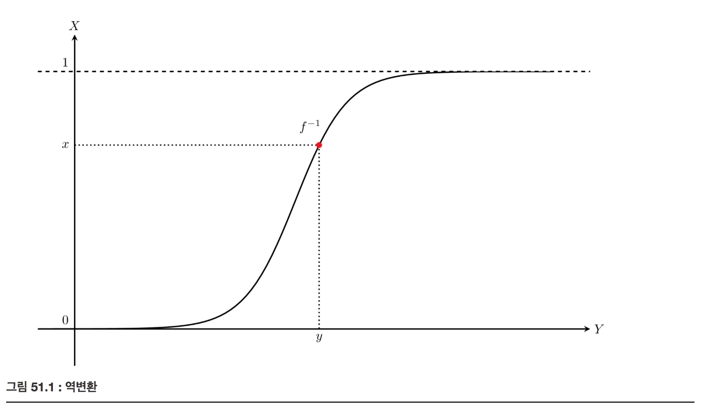
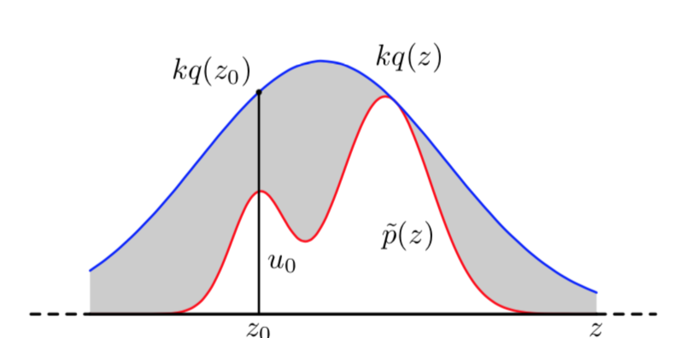
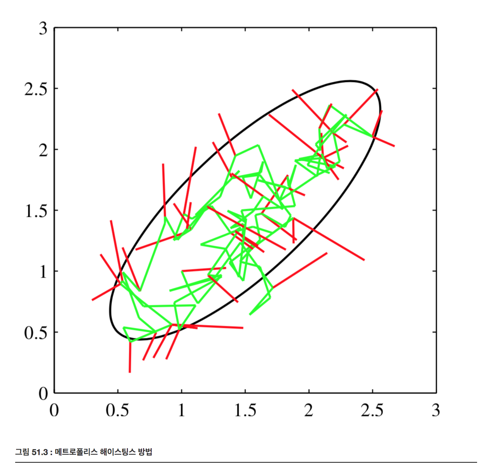

몬테카를로 베이지안 분석
Summary
- 마르코프 체인은 마르코프 성질을 지닌 이산확률과정입니다. 마르코프 성질은 n+1회의 상태가 오로지 n회의 상태에만 영향을 받는 것을 의미합니다. 마르코프 체인은 n 개의 상태가 있고 그 상태들 중 임의의 상태로 시간에 따라 변해가는 과정을 생각할 수도 있습니다. 예를 들어 {R, G, B}라는 상태가 있고 첫번째는 G, 두번째를 R, 세번쨰는 G, 네번째는 G 상태라고 가정하고 마르코프 성질을 지니고 있기 때문에 두번째는 첫번째 상태에 영향을 받고 세번째는 두번째 상태에 영향을 받는다. 그러나 첫번째 G 상태에서 두번째 R 상태가 나오는 것처럼 마르코프 성질은 무조건 상태가 G일 때 X이다 가 아닌 상태가 G일때 R일 확률 얼마, G일 확률 얼마, B일 확률 얼마 이런식으로 정의된다. 따라서 마코프 체인은 상태전이확률 행렬의 핵심이 된다.
표본 생성
확률변수의 분포함수 을 알고 있다고 하자. 이 분포함수를 따르는 표본을 생성하는 방법들에 대해 공부해보자.
- 균일분포
- 역변환
- rejection sampling
- importance sampling
균일분포 uniform distribution
파이썬의 난수 생성기(Radom Number Generator)는 마츠모토 마코토(松本 眞)와 니시무라 타쿠지(西村 拓士)가 고안한 메르센 트위스터(Mersenne Twister) 알고리즘 중에서 주기가 인 MT19937 알고리즘을 사용한다. 이 알고리즘에서 생성되는 값은 사실 정확한 난수가 아니라 주기로 반복되는 결정론적 수열이므로 유사 난수 생성기(Pseudo Radom Number Generator)이다. 이 값을 주기로 나누어 0부터 1사이의 부동소수점을 출력하는 균일분포(uniform distribution) 표본 생성에 사용한다. 컴퓨터로 생성할 수 있다.
역변환 inverse transform
역변환은 확률분포함수가 수식으로 주어지는 기본적인 확률분포들의 경우에 사용할 수 있다. 균일분포에서 생성된 x값을 임의의 실수로 변환하는 단조증가함수 를 생각해보자. 이 함수를 적용한 값을 y라고 하고 y를 표본으로 가지는 확률변수를 Y라고 하면 Y의 누적분포함수는 의 역함수인 이 된다.

반대로 생각하면 우리가 원하는 확률분포함수 p(Y)가 있따면 이 함수를 적분한 함수의 역함수를 균일분포 표본에 적용하면 우리가 원하는 확률분포를 가지게 된다.
Rejection Sampling
rejection sampling은 우리가 원하는 분포함수가 수식으로 주어지고 적분 및 역함수를 구하기 쉽지 않을 경우에 사용할 수 있다.
목표 확률분포 p(x) 와 유사하지만 표본 생성이 쉬운 유사 확률 분포 q(x)를 사용한다.
- p(x) : 샘플링하고자 하는 목표 확률분포
- q(x) : 샘플링 가능한 유사 확률분포
유사확률분포 q(x)의 표본을 생성한 다음에 p(z)/kq(z)의 확률로 이 표본을 채택할지 아니면 버릴지를 결정한다. 이 때 k는 가 되도록 하는 스케일링 상수이다.

기댓값 추정
확률분포의 표본을 생성하는 이유 중의 하나는 표본을 이용하여 그 확률분포의 기댓값을 추정할 수 있기 때문이다. 우리가 관심을 가지는 확률분포 p(X)에 대해 기댓값 을 구하고 싶을 때, N개의 표본 데이터 이 존재한다면 몬테카를로 적분을 이용하여 기댓값을 추정할 수 있다. 물론 이 값은 오차가 존재하지만 표본의 갯수 N이 증가할 수록 오차는 작아진다.
Importance Sampling
만약 기댓값을 계산하고자 하는 것이 표본을 생성하는 유일한 목적이라면 표본 생성과 기댓값 계산을 위한 몬테카를로 적분을 하나로 합친 importance sampling을 사용할 수 있다. rejection sampling에서와 같이 인 유사 분포 의 표본을 생성하고 다음 식을 이용하여 직접 기댓값을 계산한다.
은 표본에 대한 가중치 역할을 하므로 importance 라고 한다. rejection으로 인해 버리는 표본이 없기 때문에 더 효율적인 방법이라고 할 수 있다.
마코프 체인 Markov chain
상태값이 K개의 유한한 값만 가질 수 있는 이산 상태(discrete-state) 시계열 확률과정에서 시간 t의 값 의 확률분포 가 시간 t-1의 값의 확률분포 과 조건부확률분포 에만 의존하면 이 시계열 확률과정을 마코프 체인이라고 한다.
이산 상태 마코프 체인에 전체 확률의 법칙을 적용하면 가 성립한다. 가 카테고리 분포이므로 행 백터(row vector) 로 표현하면 위 식은 라는 행렬식으로 표현 할 수 있다. 이 식에서 조건부 확률을 표현하는 K x K 행렬 T는 전이행렬(transition matrix)라고 한다.
전이행렬이 대칭행렬인 마코프 체인을 reversible Markov chain 혹은 detailed balance condition을 만족한다. 이러한 마코프 체인은 시간 t가 흘러감에 따라 초기 조검 와 관계없이 항상 같은 분포 로 수렴한다는 것이 증명되어 있다.
위 식에서 ′t′는 수렴상태에 도달한 이후의 시간을 뜻한다. 따라서 수렴상태에 도달한 후에는 표본은 모두 같은(identical) 확률분포에서 나온 값이 된다. 이 표본 집합 를 trace라고 한다.
MCMC Markov Chain Monte Carlo
MCMC(Markov Chain Monte Carlo) 방법은 rejection sampling이나 importance sampling과 달리 마코프 체인을 이용하는 표본 생성 방법이다. 마코프 체인의 수렴분포가 원하는 분포 가 되도록 하는 마코프 체인을 만들고 이 마코프 체인을 시간 이상 가동하면 그 다음부터는 원하는 분포의 표본을 얻을 수 있다.
메트로폴리스 해이스팅스 방법
메트로폴리스 해이스팅스 표본 생성법(Metropolis-Hastings Sampling)은 MCMC 방법의 일종이다. rejection sampling과 비슷하지만 계산용 분포 로 무조건부 분포 가 아니라 조건부 분포 를 사용한다. 를 기댓값으로 하는 가우시안 정규분포를 많이 사용한다.
표본 생성방법은
- t=0이면 무작위로 생성.
- 표본 생성이 가능한 분포로부터 표본 을 생성한다.
- 다음 확률에 따라 를 로 선택한다. 이를 메트로폴리스 해이스팅스 기준이라고 한다.
만약 선택되지 않으면(rejection) 새 값을 버리고 한 단계 전의 과거 값을 다시 사용한다.
- 충분한 수의 샘플이 모일때까지 위 2 ~3 과정을 반복한다.
만약 계산용 분포 가 가우시안 정규분포이면 조건 과 결과 가 바뀌어도 확률값은 같다.
이 경우에는 기준확률이 가 된다. 이를 메트로폴리스 기준이라고 한다.
메트로폴리스 기준을 따르면 가 보다 크게 만들려고 노력한다. 즉 다음 그림처럼 되도록 확률이 높은 위치로 이동하려고 노력하지만 항상 그렇게 되지는 않는다.

MCMC 방법에는 이외에도
- Hamiltonian Monte Carlo
- NUTS(No-U-Turn Sampler) 방법들이 존재한다. Hamiltonian Monte Carlo 방법은 되도록 버려지는 표본이 없도록 확률분포의 그레디언트 벡터 정보를 사용한 최적화를 도입한 방법이다. NUTS는 Hamiltonian Monte Carlo을 개선한 방법이다. 보다 자세한 내용은 다음 웹사이트를 참조한다.